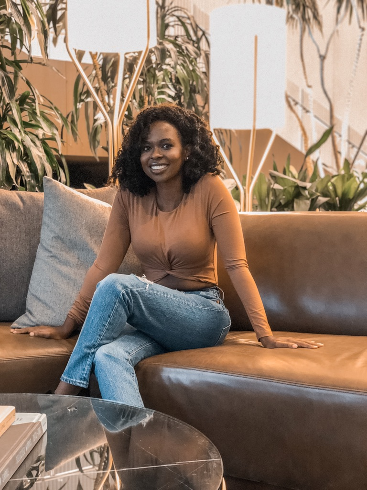

<!DOCTYPE html>
<html lang="en"></html>
  <head>
      <meta charset="utf-8">
    <title> Personal Portfolio Website</title>
    <link rel="stylesheet" href="style.css">
  </head>
  <body>
      </h1>
        
    <div class="absolute"> 
        <h2 class="header"> MY JOURNEY </h2>
         Hello there, my name is Joanne Imbisi and I am on a journey to become a software engineer. I stated out as a nursing major in college. By the time I was accepted into Nursing School I knew I made a considerable mistake. I continued on with the program for two semesters trying to fight the urge to quit. I felt like a fraud the entirety of the program and finally gained the courage to leave the program. I then took a year off to make sense of my life purpose. I knew that I love to solve problems and work creatively. I also knew that I like to travel frequently while being able to work remotely. This lead me to my career switch to Software Engineering. </p>
        <h3 class="header"> MY THOUGHTS</h3>
         Life is too short to be stuck in a career that drains you. I would rather waste 5 years pursiung the wrong career verses 40 years being stuck somewhere I know I don't belong. Taking the initiative over your life is crucial and it's best to do it as soon as possible. I always encourage everyone to follow their dreams and not to settle for a life they. </p>
        <h4 class="header"> MY GOALS</h4>
        Upon completing Flatiron School, I will take about four weeks to prepare for interviews. This will include working on personal projects, updating my resume and practicing data structures and algorithms. I will find recruiters to help me with building connections in the industry and also network as much as I can on my own. Networking on my own will include going to meetups and reaching out to people on LinkedIn who are in the same industry or line of work in the company I may be interested in. I will then search for a full-time job as a software engineer. I live about two hours away from Silicon Valley so my plan is to find a job there and move to the Bay Area but I would also be applying to jobs in New York City. I would either work for a startup or global tech company as a junior software engineer. I prefer to work from home so a remote job would be the most desirable. I would then work to pay off all of my debt so that I can settle down and purchase my first home. These would be my goals upon completing the program and I am more than excited to begin this journey.</p>
     </div>  
    </body>
</html>